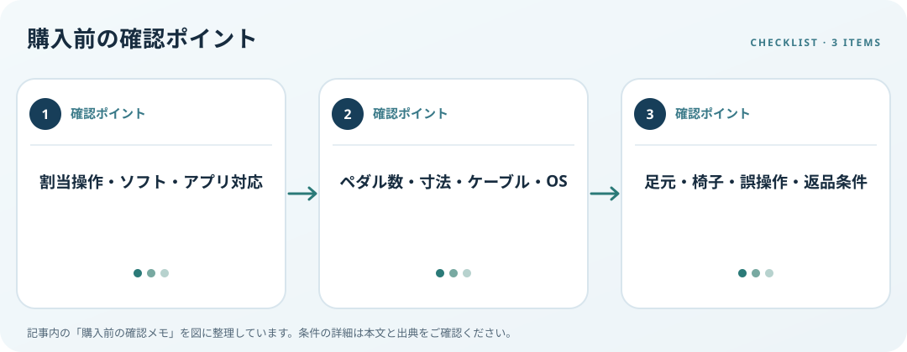

割当操作、対応ソフト、接続条件、机下のスペースと誤操作防止を確認します。この記事では仕様の確認順を整理します。

割り当てたい操作を決める
キー入力、ショートカット、再生停止など必要な操作を具体的に書きます。ペダルがどの入力方式を使うか、専用ソフトなしで動くか、アプリごとの割当を保存できるかを確認します。Windowsのアクセシビリティ機能で代替できる操作がないかも調べます。
ペダルとPC条件を照合
ペダル数、踏み面、間隔、ケーブル長、USB端子、OS対応を比較します。設定変更に管理者権限が必要か、設定を別PCに移せるかもメーカーの案内を読みます。実際の踏み心地や音は製品説明だけで決めず、返品条件を確認しましょう。
足元と椅子の動きを確認
机下の幅、椅子のキャスター、電源コード、足を置く場所との干渉を測ります。踏んだ時にペダルが滑らず、誤操作で椅子が動かない位置に置けるかを確認します。特殊な支援目的で使う場合は個人差があるため、必要に応じて専門家にも相談します。
購入前の確認メモ
- 割当操作・ソフト・アプリ対応
- ペダル数・寸法・ケーブル・OS
- 足元・椅子・誤操作・返品条件
この記事は出典の公開情報を購入前の確認項目に整理したもので、特定商品の使用・実測・レビュー・ランキング・価格・在庫の調査は行っていません。購入時には利用機器メーカーの最新仕様をご確認ください。
出典
- Input accessibility — Microsoft（確認日: 2026-10-10）
- Workstation Evaluation — OSHA（確認日: 2026-10-10）
- Workstation Environment — OSHA（確認日: 2026-10-10）